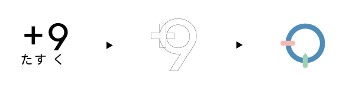

Scroll
Page Top

ABOUT
-
ME
サイトウ ユウコ1981年秋田県生まれ。海のそばで18年間過ごしました。
秋田、岐阜、神奈川と移り住み、現在は千葉県在住です。
小さいころからモノづくりや手先を動かすことが好きで、自分の手で何かを作り出す仕事や職人と呼ばれる人にずっと憧れを抱いていました。
15年務めていた動物関連の会社を辞めたことをきっかけに、自分でデザインを作り上げるということに興味を持ち、40歳を過ぎてからですが職業訓練校やスクールにてwebデザイン、グラフィックデザインを学び始めました。
微力ではありますが、人と人とのつながりを大切に、お客様とお客様の課題に丁寧に向き合って、多くの方のチカラになれるよう努力していきたいと考えています。 -
TasK
コンセプトは
I will help you do your task whenever you need it
― あなたのタスクをお助けしますー私の名前には「祐」という字が使われています。この字は「助ける」という意味を持ち「たすく」とも読みます。 「task」はラテン語で「触ってする」という意味を持ち、転じて英語の「課題、仕事」という意味になっているそうです。そこから自分の手で作ったデザインでお客様のタスク（課題）の助けになりたいという想いを込めて「TasK」という屋号にしました。 -
LOGO
ロゴマークはタスクを「＋9（たすく）」と読み変えて、数の多い様子を表す「9」と多くの可能性を秘めた「＋」をモチーフに作成しました。 円は人との和を表し、たくさんの人との出会い・繋がりがありますように、という想いを込めています。また、お客様に寄り添っている様子や手と鉛筆が机に向かってデザインをしている様子をイメージしました。 たくさんの人との出会いから多くのアイデアが生まれ、そのアイデアでたくさんの人の力になりたいという決意の表れでもあります。